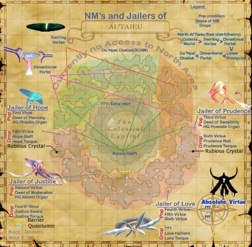

Level 75 reference · Zenith rules
|
Job: Summoner, Black Mage, Red Mage Notorious Monster |
|
Zone |
Level |
Drops |
Steal |
Spawns |
Notes |
|
90 |
1 |
T(H) | |||
|
HP = Detects Low HP; M = Detects Magic; Sc = Follows by Scent; T(S) = True-sight; T(H) = True-hearing JA = Detects job abilities; WS = Detects weaponskills; Z(D) = Asleep in Daytime; Z(N) = Asleep at Nighttime | |||||


Image source
Notes:
- Popped by trading Fourth Virtue, Fifth Virtue and Sixth Virtue to a ??? at K-12.
- Extremely high HP and Auto Regen (200-250 HP/tick)
- Has a TP move called "Flourescence" that grants it a Boost ability. Can be Dispelled.
- Aura Steal can also remove or absorb the effect.
- It is possible for a tank to stand at the edge of the large circular hood, so that the Jailer does not melee him.
- Shield Bash and Chaotic Strike can interrupt its casting.
- Shield Bash has a high rate to cancel its casting.
- Summons Qn'xzomit, Qn'hpemde and Ru'phuabo helpers approximately every 2.5 minutes.
- Each time it summons 3 copies of one type of helper which engage the person with hate.
- After summoning three sets each of Qn'xzomit, Qn'hpemde, and Ru'phuabo, its Auto Regen is reduced to a much more manageable level, and it summons only Ru'phuabo for the remainder of the fight.
- Astral Flow causes all of its helpers to immediately perform the same TP attack. Astral Flow can be used more than once.
- Only 9 Qn'xzomit and 9 Qn'hpemde can be summoned. Ru'phuabo (Sharks) are unlimited.
- Once it is only summoning Ru'phuabo, two of the summons can be pulled apart and held, so that JoL only summons one at a time. Verification Needed
- Elemental weakness changes periodically, accompanied by the 2-hour "dust cloud" animation. It will only cast one element's spells at a time. Casts Tier IV nukes, Tier III ga nukes, and various -ga offensive enfeeble and dark magic spells. Nuking or Skillchaining it with its strong element will heal it.
- Enfeeble's range is larger than Tier3 nukes.
Dialogue
The "???" at K-12 says:
A distant voice emanates from the depths of your soul.
"Now...I...know..."
"Fourt...irtue..."
"Fif...irtue..."
"Sssix...irtue..."
"I...desssire..."
The fragmented dialogue is referring to the Fourth Virtue, Fifth Virtue, and Sixth Virtue.
Adapted from Eden Wiki: Jailer of Love · Contributors and history · CC BY-SA 4.0. Revision 1922. Layout, links and optional background text adapted for Zenith.